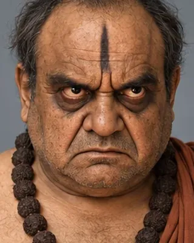

early 18th century · Shakta adviser at court

A scholar from Nabadwip invited as religious guide under Rudra Singha; later adviser (Parbatiya Gosain) under Siva Singha.
Record confidence: medium.
Open interactive profile
c. 1714–1720s